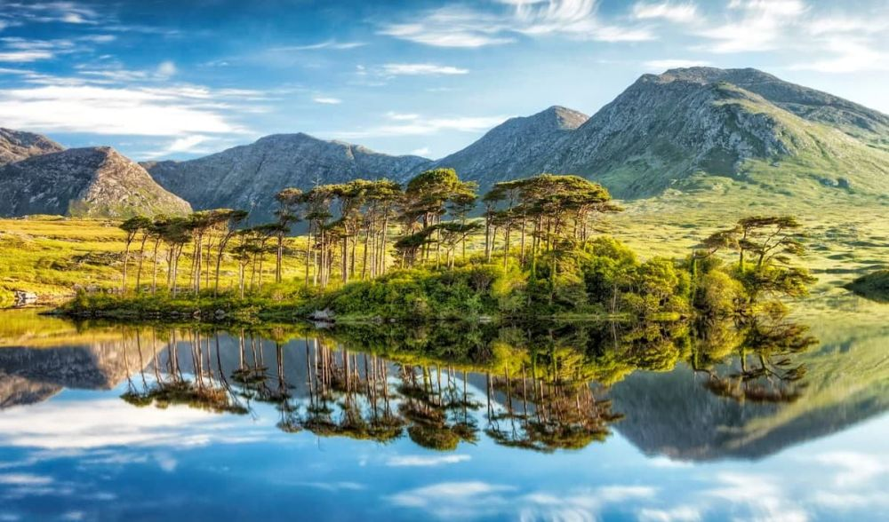

Descoperă Connemara - O aventură în inima naturii irlandeze
Regiunea Connemara din Irlanda este un colț pitoresc al țării, oferind o gamă variată de atracții pentru vizitatori:
-

Mănăstirea Kylemore - Bijuterie arhitecturală
O mănăstire benedictină frumoasă înconjurată de grădini spectaculoase și un lac pitoresc.
-

Parcul Național Connemara - Natură sălbatică
Această zonă protejată găzduiește o varietate de peisaje naturale, munți, lacuri și biodiversitate unică.
-

Sky Road - Priveliști spectaculoase
O rută panoramică ce oferă vederi uimitoare asupra coastei și a peisajului rural.
-

Ponei Connemara - Faună locală
Poneii Connemara sunt emblematici pentru regiune și reprezintă o parte importantă din cultură.
-

Fiordele Killary - Peisaje acvatice
Aceste fiorde oferă oportunități de croaziere și explorare a peisajelor montane și maritime.
Concluzii
Connemara este o destinație irezistibilă pentru cei care doresc să exploreze peisaje naturale, cultură și tradiții autentice irlandeze.